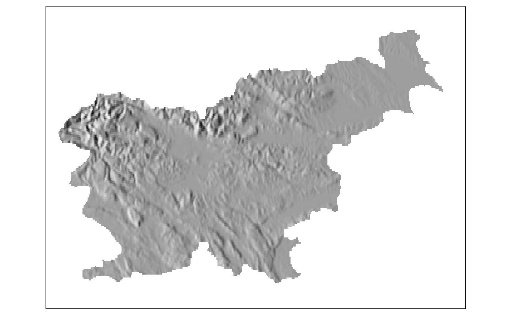
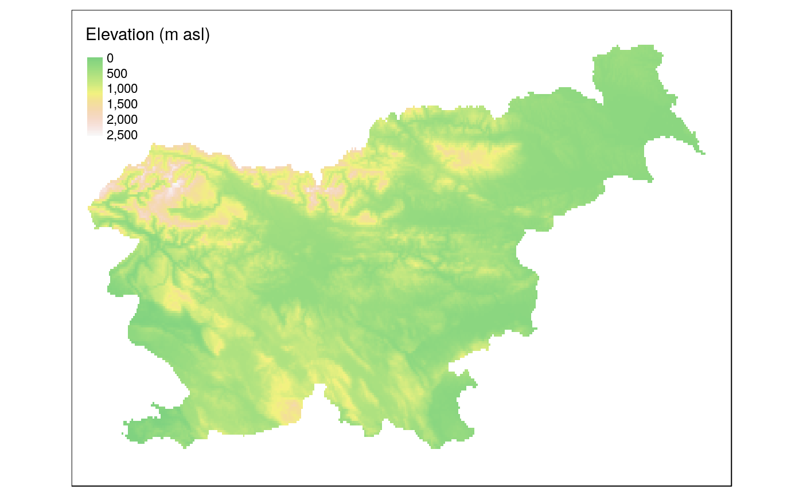
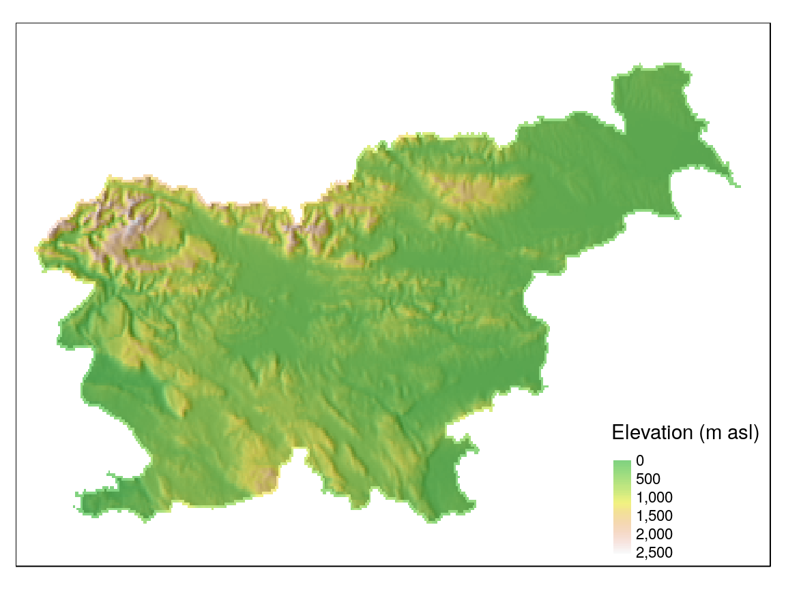

vignettes/maps.Rmd
maps.RmdThis vignette builds on the making maps chapter of the Geocomputation with R book.
Hillshade maps show the topographical shape of hills and mountains using levels of gray on a map. The role of this kind of maps is to display relative slopes, but not absolute height.
Elevation data is needed to create a hillshade map. The raster package provides an easy access to the SRTM 90 m resolution elevation data with the getData() function. For example, it is possible to download the elevation data for the whole country of Slovenia using the code below:
Hillshade maps are created based on certain terrain characteristics - slope and aspect. Both of them can be calculated with the terrain function and the opt argument set to "slope" or "aspect".
Computing of a hillshade can be done using the hillShade() function. It requires previously created slope and aspect objects and setting two new arguments angle and direction. The angle argument is the elevation angle of the light source and the direction argument is the direction (azimuth) angle of the light source (sun), both in degrees.
The output object can be plotted with plot(hill), however, it does not give an expected map. This is because the hillshade object should be overlayed by another semi-transparent layer to give a proper visualization.
A hillshade map can be created using the tmap package. This package builds maps by stacking different data layers. In this case, the first layer is the hillshade object (hill), colored using different levels of gray.
tm_shape(hill) +
tm_raster(palette = gray(0:10 / 10), style = "cont", legend.show = FALSE)
#> Linking to GEOS 3.7.0, GDAL 2.3.2, PROJ 5.2.0
The second layer is the elevation object (alt), colored using the terrain.colors palette.
tm_shape(alt) +
tm_raster(alpha = 0.5, palette = terrain.colors(10), style = "cont",
title = "Elevation (m asl)", legend.show = TRUE)
Finally, both layers can be combined to create an expected visualization. It could be also improved by placing the legend on the right bottom of the map.
tm_shape(hill) +
tm_raster(palette = gray(0:10 / 10), style = "cont", legend.show = FALSE) +
tm_shape(alt) +
tm_raster(alpha = 0.5, palette = terrain.colors(10), style = "cont",
title = "Elevation (m asl)", legend.show = TRUE) +
tm_layout(legend.position = c("RIGHT", "BOTTOM"))